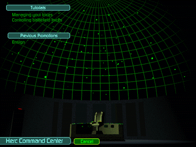

As you are promoted, you are notified of new forces and technology that become available to you through communications from UNItech Command. These messages are displayed after successfully completing promotion-potential missions. To review these messages, select Communications from inside the Command Center, then select the appropriate Promotion message.
